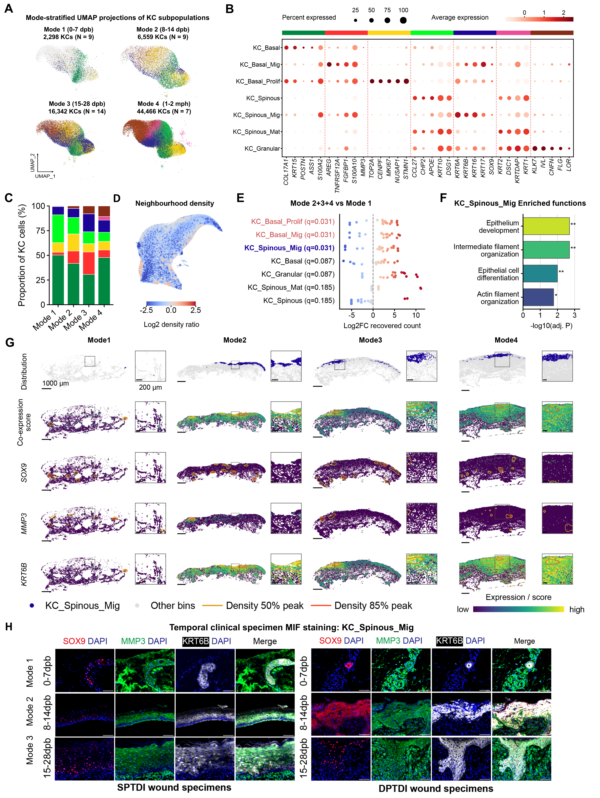

Keratinocyte states, temporal composition, marker resources and selected functional programs.
Executed supporting analyses and/or archived sources; see panel-specific status
Source data · Panel manifest · Execution report

| Panel | Description | Status |
|---|---|---|
| S2A | (A) Phase-stratified projections of seven keratinocyte states onto the retained embedding. The wound-phase groups contain 2,298, 6,559, 16,342, and 44,466 keratinocytes. | partial |
| S2B | (B) Keratinocyte-state marker dot plot. Dot area indicates detection frequency; color depicts the displayed average-expression scale. | partial |
| S2C | (C) Within-keratinocyte composition across the four clinical phases. Sample fractions are averaged within participant/phase and then across participants. | partial |
| S2D | (D) Neighborhood-density proxy on the retained two-dimensional embedding, using 50 neighbors and the normalized Mode-2–4/Mode-1 count ratio with pseudocounts. | partial |
| S2E | (E) Exploratory recovered-count comparisons between eight early and 20 later-phase sequencing libraries. KC_Basal_Prolif, KC_Basal_Mig, and KC_Spinous_Mig each have within-lineage BH-adjusted P = 0.0311 from two-sided Welch tests. | partial |
| S2F | (F) Selected GO Biological Process terms for the KC_Spinous_Mig marker program. Epithelium development, intermediate-filament organization, epithelial-cell differentiation, and actin-filament organization have library-wide BH-adjusted P values of 0.00200, 0.00200, 0.00994, and 0.01664, respectively. The 309-gene query and 13,067-gene background derive from the documented exploratory marker screen; the four terms are a post hoc display selection. | partial |
| S2G | (G) KC_Spinous_Mig distributions and SOX9/MMP3/KRT6B-associated spatial signals across four morphological repair representatives. Overview and inset bars, 1,000 and 200 micrometers. Expression and joint-score maps summarize spatial bins. | partial |
| S2H | (H) Multiplex images of SOX9 (red), MMP3 (green), KRT6B (white), and DAPI (blue), with merged views, in superficial and deep partial-thickness injury specimens across three sampling phases. Original scale bars are retained. | partial |
Temporal sampling groups and morphological Mode 1–4 are separate variables; historical N labels and the method/figure version must be reconciled as recorded in the technical audit.